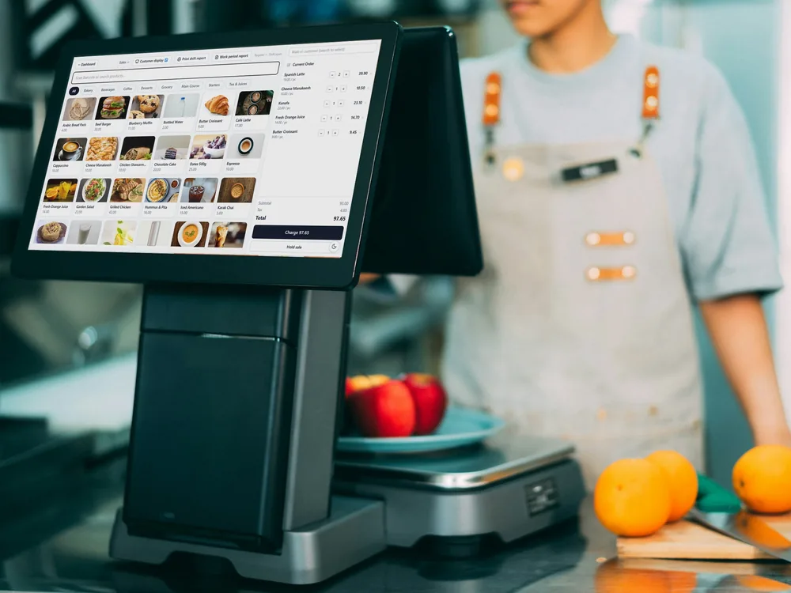
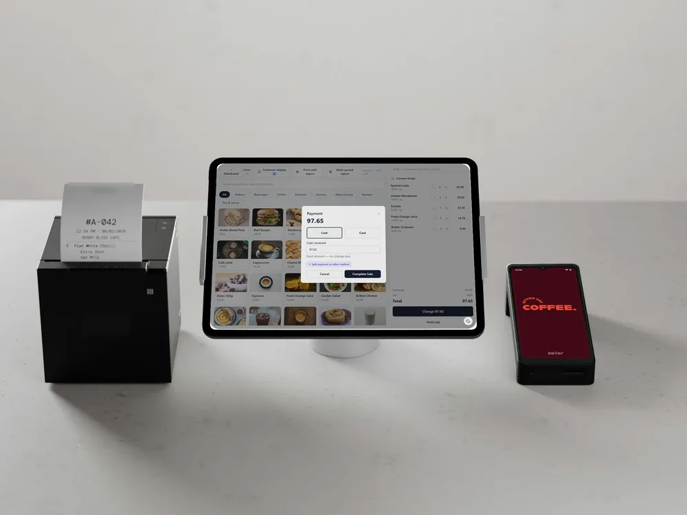
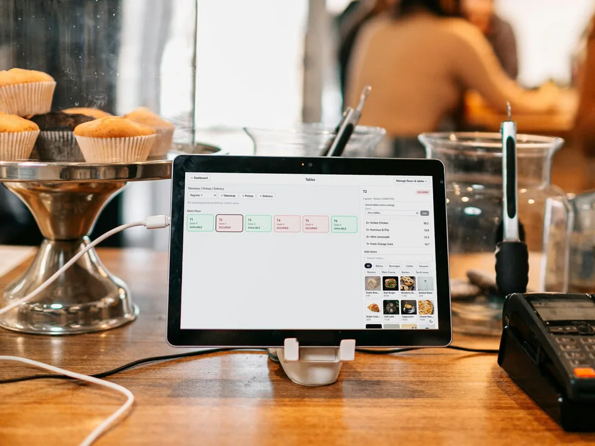
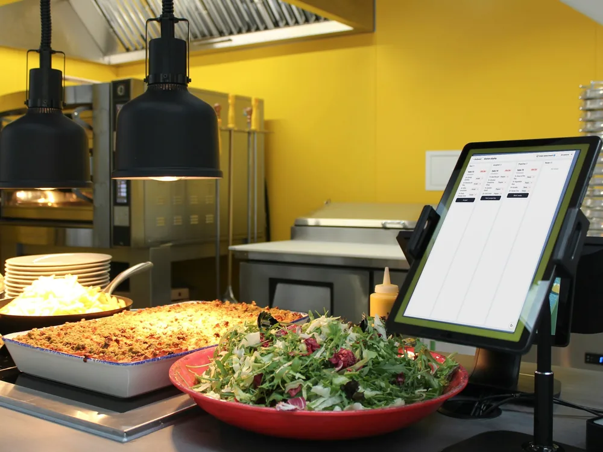
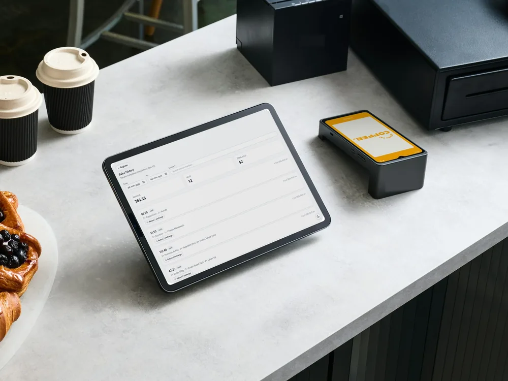
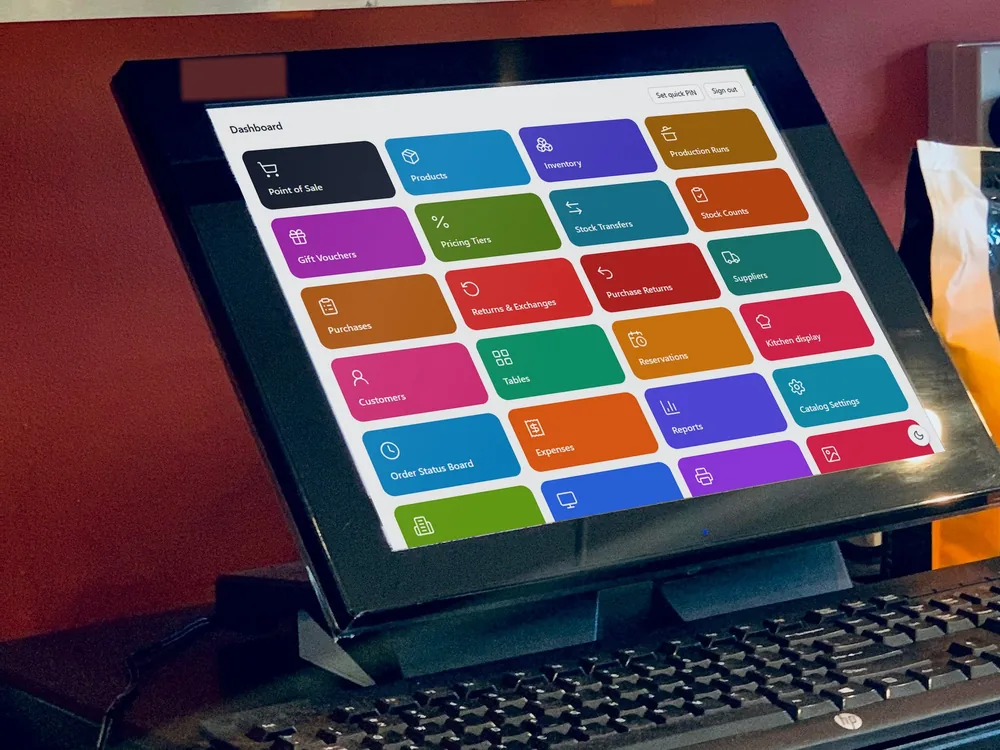

SELLO
A complete point-of-sale and shop management system for retail stores, restaurants and cafés — running on your own shop network, so billing never waits for the internet.
$
SELLO in action
Real screens from SELLO, running a demo café & mart, each shown on a different kind of POS hardware. Click any screen to see it full size.
![[ view screen ]](../images/products/sello/sello-pos.webp){kind=link}

[ view screen ]![[ view screen ]](../images/products/sello/sello-payment.webp){kind=link}

[ view screen ]![[ view screen ]](../images/products/sello/sello-tables.webp){kind=link}

[ view screen ]![[ view screen ]](../images/products/sello/sello-kitchen.webp){kind=link}

[ view screen ]![[ view screen ]](../images/products/sello/sello-sales.webp){kind=link}

[ view screen ]![[ view screen ]](../images/products/sello/sello-dashboard.webp){kind=link}

[ view screen ]POS hardware and product photos via Unsplash. Screens are from a demo shop with sample data.
Why SELLO
The problem
Shops and restaurants juggle separate tools for billing, stock, kitchen orders and accounts — and cloud POS systems stop working the moment the internet drops.
Our solution
SELLO puts billing, inventory, purchasing, restaurant operations and reporting into one system. One shop PC hosts SELLO, and every till, kitchen screen and back-office device connects to it over the local network.
Key features
- 01
Retail billing
Barcode search, split and credit sales, quotations, receipts and invoices.
- 02
Restaurant & café mode
Floors, tables, reservations, modifiers, kitchen display and kitchen stations, bill splitting.
- 03
Inventory & catalogue
Products with photos and barcodes, categories, brands, units, taxes, pricing tiers, stock transfers and counts.
- 04
Purchasing & suppliers
Purchases, purchase returns and supplier ledgers.
- 05
Customers & credit
Customer accounts, payments allocated to invoices, statements and ageing.
- 06
Recipes & production
Recipe-based inventory, production runs and wastage tracking.
- 07
Finance & reports
Expenses, tax, profit, stock and sales reports — export to PDF, Excel or CSV.
- 08
Registers & terminals
Registers, shifts, a customer-facing display, gift vouchers, returns and exchanges.
- 09
Security & control
Roles and permissions, PIN lock, audit log, multi-business and multi-location support.
How it works
- Step 1
Install SELLO on one shop PC with the one-click Windows installer.
- Step 2
Run the setup wizard: create the business, location and owner account, and pick retail or restaurant mode.
- Step 3
Connect tills, kitchen screens and back-office devices over the shop network — they just open SELLO in a browser.
- Step 4
Sell, track stock and run reports, with built-in backup and restore keeping the data safe.
Built for
Use cases
- Supermarkets, grocery and retail stores
- Restaurants, cafés and cloud kitchens
- Multi-counter shops with several tills
- Businesses running more than one location or brand
Benefits
- Billing keeps working through internet outages
- One system instead of separate billing, stock and kitchen tools
- Your data stays on your own server
- Staff only see what their role allows
Under the hood
Technical overview
Node.js (NestJS) server with a PostgreSQL database and a React web app. One shop server hosts the API, database and app; other devices on the same network connect through the browser. Ships with a Windows installer, runs as a Windows service, includes a print agent for receipt printers, and has backup, restore and system diagnostics built in.
Data & privacy
SELLO runs on your own hardware. Business, sales and customer data are stored in your shop’s database, not on a third-party cloud.
FAQ
Does SELLO need the internet?
No. SELLO runs on your shop’s local network, so billing, stock and reports keep working without an internet connection.
Does it work for restaurants?
Yes. Restaurant and café mode adds floors and tables, reservations, modifiers, kitchen display and bill splitting.
Which devices can use it?
Any device on the shop network with a web browser — PCs, tablets or touch terminals.
Where is my data stored?
In a database on your own shop server. Built-in backup and restore let you keep your own copies.
Interested in SELLO?
Tell us about your business — we’ll get back to you within 24 hours.